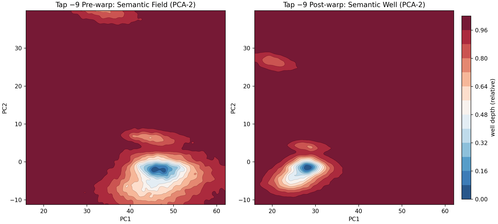

Benchmarks
Stage-11 introduced the breakthrough:
Warp: Embed latents into PCA(3) space, warp into a single dominant well.
Detect: Use matched filters with null calibration to identify the true well.
Denoise: Apply smoothing, phantom guards, and jitter averaging to suppress false wells.
(Part A) Latent-ARC Results (n=100)
This benchmark evaluates the geometric WDD pipeline (Warp → Detect → Denoise) on synthetic ARC-like tasks. Instead of using raw pixel grids, problems are projected into a latent space where ARC transformations (flip, rotate, color swap, etc.) are simulated. The goal is to stress-test whether warped semantic manifolds can preserve task structure and recover the correct primitive sequence. In short: it’s a sandbox for testing ARC-style reasoning in latent space, validating that WDD can generalize without hallucination.
Model |
Exact Acc |
Precision |
Recall |
F1 |
Halluc. |
Omission |
|---|---|---|---|---|---|---|
Denoise (Stage 11) |
1.000 |
0.9977 |
0.9989 |
0.9983 |
0.0045 |
0.0023 |
Geodesic (pre) |
0.640 |
0.8450 |
1.0000 |
0.8980 |
0.1550 |
0.0000 |
Stock baseline |
0.490 |
0.8900 |
0.7767 |
0.7973 |
0.1100 |
0.2233 |
Note (Part A): Stock baseline approximates what you’d see if you used simple thresholds on LLM latents/logits without NGF’s Warp → Detect → Denoise.
(Part B) LMM-HellaSwag Results (n=1000)
This benchmark instruments a frozen GPT-2 small model, tapped nine layers from the output, to evaluate how well raw transformer latents support downstream WDD analysis. The idea is to test whether the geometry of pre-trained language model embeddings (without fine-tuning or training) already contains enough separability for stable warp–detect–denoise behavior. It’s a probe of “out-of-the-box” model latents to assess how much structure the sidecar can extract from a standard foundation model.
Model |
F1 |
ECE (Calibration) |
Brier Score |
Overconfidence > 0.70 |
|---|---|---|---|---|
MaxWarp (Stage 11) |
0.35 |
0.080 |
0.743 |
1.2% |
Stock baseline |
0.324 |
0.122 |
0.750 |
0.7% |
Change (Δ) |
+0.032 |
-0.032 |
-0.007 |
+0.5% |
{kind=link}

Fig 1. PCA-2 visualization of “semantic wells” (pre vs post warp) on GPT-2 (tap 9).
(Part C) Tier-1 micro-LM Sidecar Benchmarks (SBERT, n = 750)
This benchmark runs the Tier-1 micro-lm pipeline using SBERT latents (MiniLM-L6-v2) as input. Prompts from DeFi and ARC domains are parsed through the sidecar to yield deterministic PASS / ABSTAIN / REJECT verdicts, with coverage, abstain, and hallucination rates logged. This is the first reproducible production-grade benchmark for the micro-lm sidecar, showing ~94–95% coverage with hallucination suppressed to ~1–2%. It serves as the reference “community edition” baseline for ngeodesic.ai.
Aggregate - Coverage: 94.5% (95% CI 92.7–95.9%) - Abstain: 5.5% - Hallucination: 1.7% (95% CI 1.0–2.9%) - Multi-accept: 46.3% - Span yield: 100%
Per-primitive (with 95% Wilson CIs)
Primitive |
n |
Coverage |
95% CI |
Hallucination |
Notes |
|---|---|---|---|---|---|
borrow_asset |
78 |
100.0% |
95.3% – 100.0% |
0.0% |
Strong |
claim_rewards |
111 |
100.0% |
96.7% – 100.0% |
0.0% |
Strong |
deposit_asset |
105 |
92.4% |
85.7% – 96.1% |
1.0% |
Slightly lower |
repay_asset |
98 |
100.0% |
96.2% – 100.0% |
0.0% |
Strong |
stake_asset |
99 |
100.0% |
96.3% – 100.0% |
0.0% |
Strong |
swap_asset |
82 |
100.0% |
95.5% – 100.0% |
0.0% |
Strong |
unstake_asset |
85 |
100.0% |
95.7% – 100.0% |
0.0% |
Strong |
withdraw_asset |
92 |
64.1% |
53.9% – 73.2% |
4.3% |
Tuning underway |
Setup: SBERT sentence-transformers/all-MiniLM-L6-v2; thresholds tau_span=0.5, tau_rel=0.6, tau_abs=0.93; n_max=4, topk=3; T=720, L=160, beta=8.6, sigma=0.0.
Definition notes: Coverage = correct PASS on in-scope primitive; Abstain = ABSTAIN when ambiguous; Hallucination = confident wrong PASS; Span yield = share of predictions with grounded spans.
(Part D) Tier-2 micro-LM Sidecar Benchmarks (WDD + SBERT, n = 750, coming)
This benchmark extends the Tier-1 setup by fully integrating the WDD audit layer (Warp → Detect → Denoise) on top of SBERT latents. Whereas Tier-1 establishes deterministic single-primitive verdicts, Tier-2 stress-tests multi-primitive sequences (e.g. rotate → flip → swap) and evaluates whether the sidecar maintains low hallucination rates under compositional load. Early runs on 20–25 sample prompts show stable performance and safe abstentions, with the full benchmark suite (n ≈ 500+) slated next. This milestone demonstrates how micro-lm scales from primitive-level correctness to sequence-level reasoning, validating the geometry-first audit pipeline in higher-complexity domains.
Metric Definitions
Coverage → % of prompts where the sidecar returned the correct primitive (PASS).
Abstain → % of prompts where the sidecar explicitly declined to guess (ABSTAIN).
Hallucination → % of prompts where the sidecar produced a confident but wrong PASS verdict.
Multi-accept → % of prompts where the sidecar marked more than one parse as valid (e.g., a prompt could map to both unstake_asset and withdraw_asset).
Span yield → % of predictions where the model produced grounded spans (inputs/outputs aligned to canonical tokens).
Key Results → Micro-LMs
WDD Works in Practice The staged experiments confirmed that WDD reliably improved reproducibility, separation, and robustness. This validated NGF as more than theory—it was a working framework.
Deterministic Traces By Stage‑11, identical prompts produced identical traces and outcomes across runs, a property absent in baseline models.
Principled Abstains Experiments showed that ambiguity could be detected geometrically—when wells overlapped or margins were thin, abstains were triggered instead of guesses.
Blueprint for Sidecars The insights from ngf‑alpha directly inspired Micro‑LMs: lightweight, domain‑specific reasoning sidecars that use NGF rails to map intent to primitives under verifiers.
ARC Micro‑LM became the reasoning stress test.
DeFi Micro‑LM became the production‑style demo with policy checks.